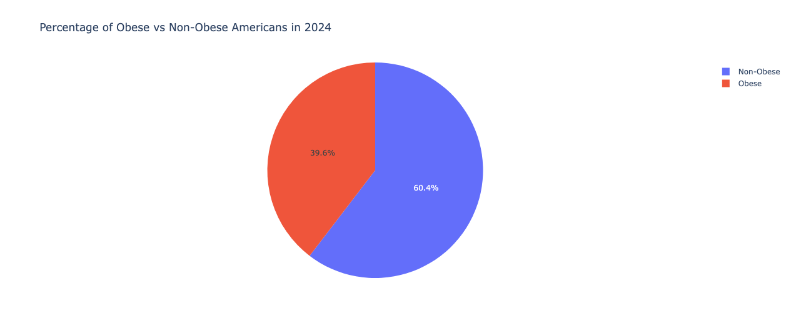

Our team has executed a deep analysis of obesity rates across the United States specifically, and beyond. We have spotlighted Indiana in order to better understand the community we have moved into since attending Notre Dame. We also explored social justice issues pertaining to obesity such as the likelihood of obesity within groups that live far from grocery stores and do not have access to cars. Lastly, we investigated the correlation between race and obesity. We hope that our conclusions jolt Americans awake to their physical state and what they could be doing better.
We used a variety of CSV files and converted them into Data Frames in order to plot them. We found these files on numerous websites including Data.gov, USDA.gov, Statista, and the Center for Disease Control and Prevention, also known as the CDC.